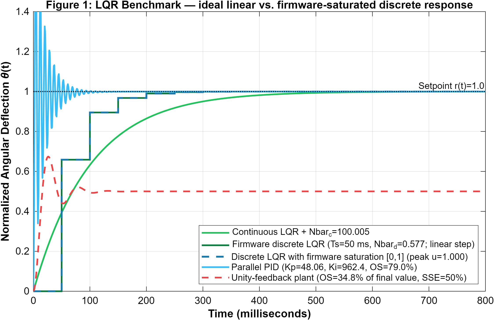
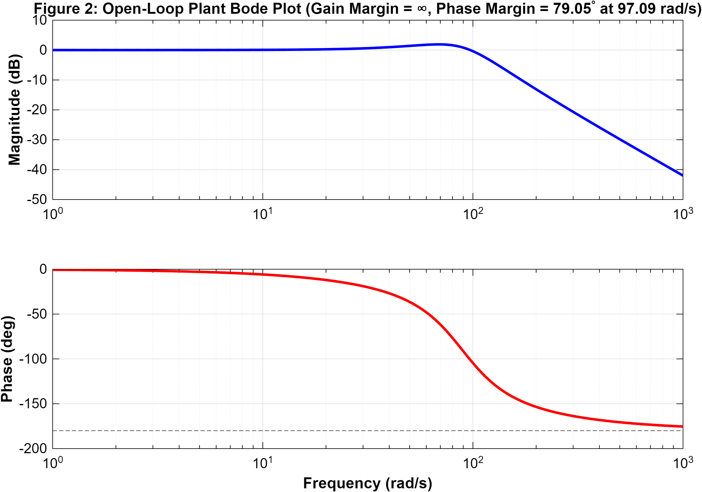
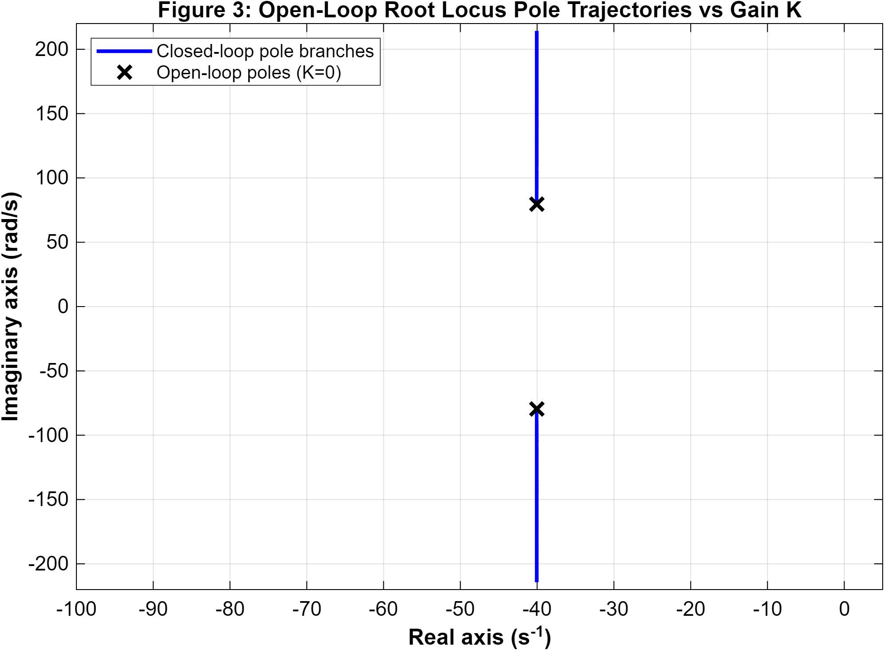
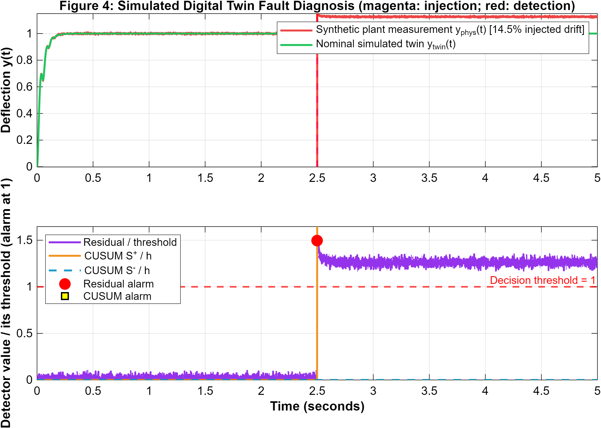
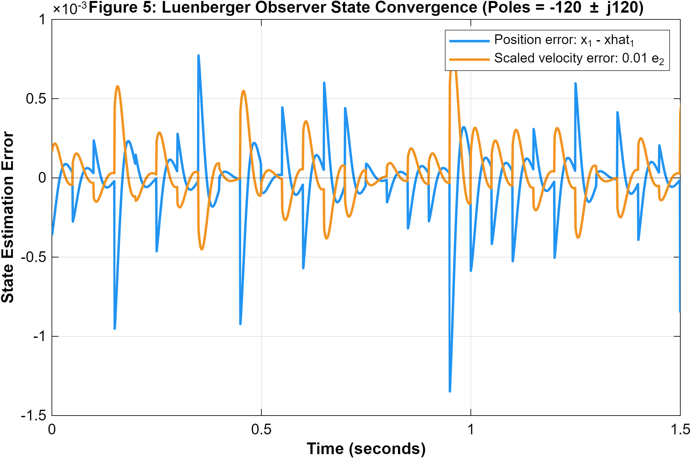
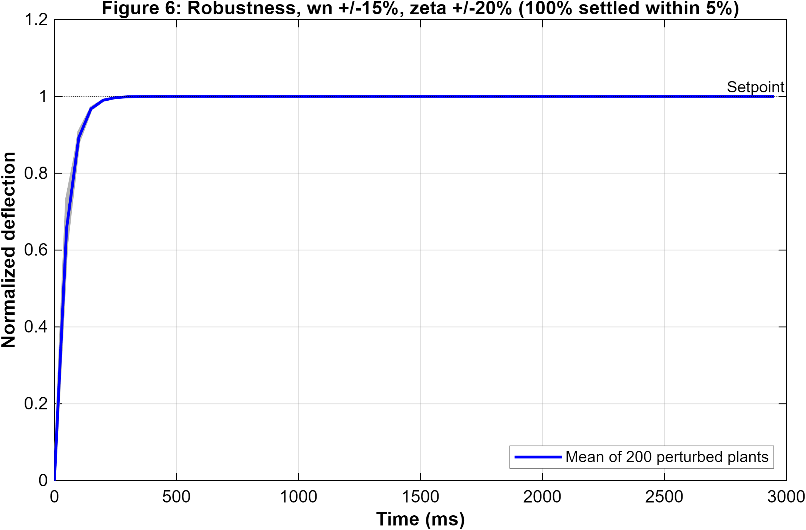

ROLL0.0°PITCH0.0°
FIXED US10 cmSERVO US290°RANGE —TRACK —
MODE—
AWAITING TELEMETRY
MODEL STATES [x₁ vs y_twin] · NOT INDEPENDENT SENSOR DATA
Δ: 0.000
SOFTWARE-MODEL RESIDUAL & CUSUM
NOMINAL
LQR EFFORT u(t) & SERVO
u: 0.50
ATTITUDE φ/θ & PHASE
SCOPE 1: MODEL-STATE COMPARISON (NOT INDEPENDENT SENSOR VALIDATION)
MODEL STATES
SCOPE 2: SOFTWARE-MODEL RESIDUAL & CUSUM
STATUS: NOMINAL (r < δ)
SCOPE 3: LQR OPTIMAL CONTROL EFFORT u(t) & SERVO ANGLE θ
u(t): 0.500 | θ: 90°
SCOPE 4: MPU-6050 EULER ATTITUDE (ROLL/PITCH) & VIBRATION
0.0° / 0.0° (DESK ZERO)
SCOPE 5: STATE-SPACE TRAJECTORY (x₁ vs x₂ = ẋ₁)
Asymptotic Stability Re(λ) < 0
SCOPE 6: THERMAL DYNAMICS T(t) vs DYNAMIC THRESHOLD Γ(t)
Margin: +9.5°C
SCOPE 7: FIXED / SERVO ULTRASONIC RANGES (cm)
FILTERED · GAPS = NO FRESH RANGE
MATLAB SCOPE / MODEL ANALYSIS
Live scope launch requires a fresh hardware source. With no source, the figure waits blank instead of substituting synthetic data; select DEMO explicitly for illustrative trajectories.
FIRMWARE MODEL AND CONTROLLER PARAMETERS
CONTINUOUS PLANT MODEL G(s)
G(s) = 7921 / (s² + 80.1s + 7921)
Assumed model parameters (not experimentally identified): ωn = 89.0 rad/s • ζ = 0.45
FIRMWARE LQR GAINS (Ts = 50 ms; model-based)
K = [−0.422821, 0.000667] • N̄ = 0.577179
Saturated command u ∈ [0, 1]; not hardware performance evidence
DISCRETE LUENBERGER OBSERVER GAINS
L = [−0.186497, 8.481368]ᵀ
Model-based observer; hardware convergence not measured
FAULT DETECTION (Araújo et al. 2025)
Software-model residual • two-sided CUSUM
Injected-simulation thresholds: δ = 0.100 • h = 0.060 • hardware FAR not measured
MATLAB MODEL / SIMULATION FIGURES (click to inspect)

Model Step-Response Comparison
Model benchmark only; firmware saturation is shown separately

Linear-Model Bode Analysis
Model analysis; not a measured hardware margin

Root Locus
Nominal model pole view; not a robustness certificate

Injected Model Residual / CUSUM
Software-injected simulation; detection delay and false-alarm rate are not hardware-validated

Observer Convergence
Observer simulation; physical estimation error not measured

Simulated Parameter Variation
200 model variants; simulation only, not measured hardware robustness or reliability